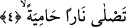
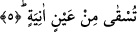

yorulurlar. Çünkü onlar dünyada iken böbürlenip Allah için çalışmamışlardır.
Yaptıklarına karşılık Allah onları âhirette ağır işlerde çalıştırmıştır. Bunlar zincirleri ve
ağır bukağıları sürüklemektir. Nitekim Allah bir başka âyet-i kerimede buna şöyle temas
eder: “Sonra da onu yetmiş arşın uzunluğunda bir zincir içinde oraya sokun”
(Hakka, 69/32) Ayrıca devenin çamura saplanması gibi ateşin içine girmekle, ateş
tepelerine tırmanmak, vâdilerine inmekle yükümlü tutulurlar.
Bazı âlimlere göre insanın zâhiren huşû duyuyor görünmesi ve bedenini yorması onu
Allah’a yaklaştırmaz tam tersine bu tip davranış insanı Allah’a yaklaşmaktan alıkor.
İnsanı yaratıcısına yaklaştıran ezelde takdir edilmiş saâdet ve içten gelerek Allah’ın
heybetinden duyulan huşudur. İşte kişiyi Allah’ın bütün emirlerine karşı gelmekten
alakoyan unsur budur. Ruhbanlar, filozoflar ve onların benzerleri olan kâfirler,
bid’atçiler ve sapıklığa düşenler sâdece soğuk demire çekiç sallamaktan heva, heves
yolunda kendilerini yormaktan ve bu uğurda çaba sarfetmekten başka bir şey
yapmıyorlar.
4. Kızgın ateşe girer.
Onlar son derece kızgın bir ateşe girerler ve o ateşin elemini tadarlar. Bu ateş üç bin
seneden beri yana yana kapkara hale gelmiştir ve zift gibi olmuştur. Hâmiye fiili güneş
ve ateşin harâretinin yükselme ve şiddetlenmesini ifâde eder.
Secavendi’nin değerlendirmesine göre okuduğumuz âyette geçen “hamiye”
kelimesiyle ifâde edilmek istenen “sıcaklığı devamlı” demektir yoksa ateş zaten
sıcaktır.
5. Onlara kaynar su pınarından içirilir.
“Onlara” susuzluğun zirvesine, yanmanın en uç noktasına vardıklarından dolayı uzun
bir süre imdat dilemelerinin ardından “son derece kaynar bir kaynaktan içirilir.” Yani
Allah bu insanlara ya bizzat kendisi veya emri üzerine melekler bu kıpkızgın kaynaktan
içirirler.
Âyette geçen “âniye” kelimesiyle ifâde edilmek istenilen harâreti son derece yüksek,
harâretin zirvesinde, sıcaklığın doruğunda olan bir pınar, kaynak demektir. Çünkü bu
pınar yukarda işâret ettiğimiz ateşle yaratıldı yaratılalı ısıtılmaktadır. Bundan bir
damlası dünya dağlarının üzerine düşseydi onlar derhal erirlerdi. Bu kızdırılmış pınar
kâfirlerin yüzlerine yaklaştırıldığında yüzlerindeki bütün etler ve deriler dökülecektir.
Bu kızgın sudan içtiklerinde bağırsaklarını paramparça edecektir. Nitekim Allah bir